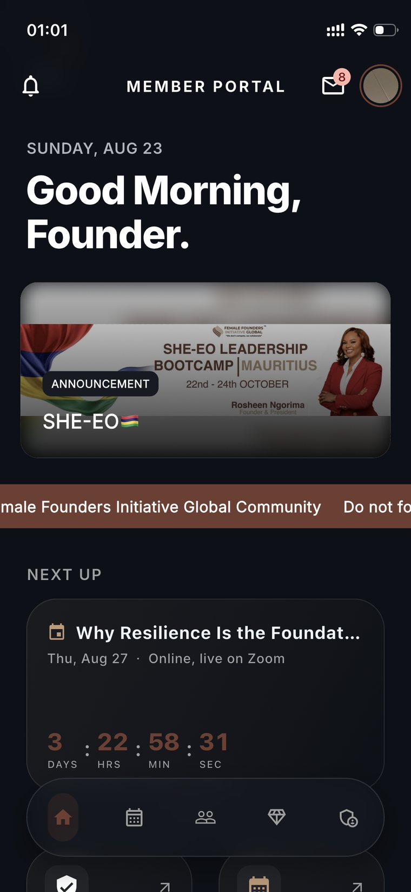
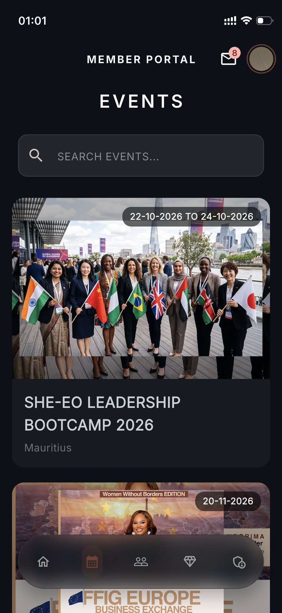
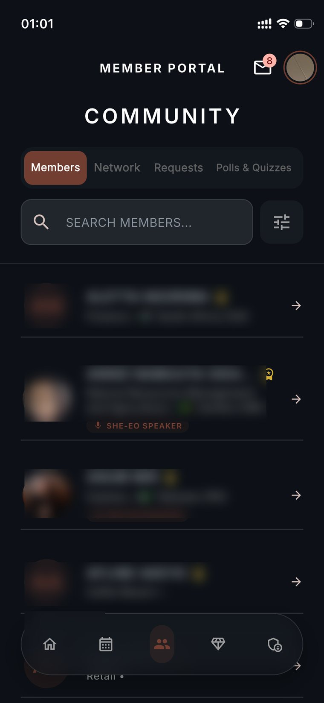
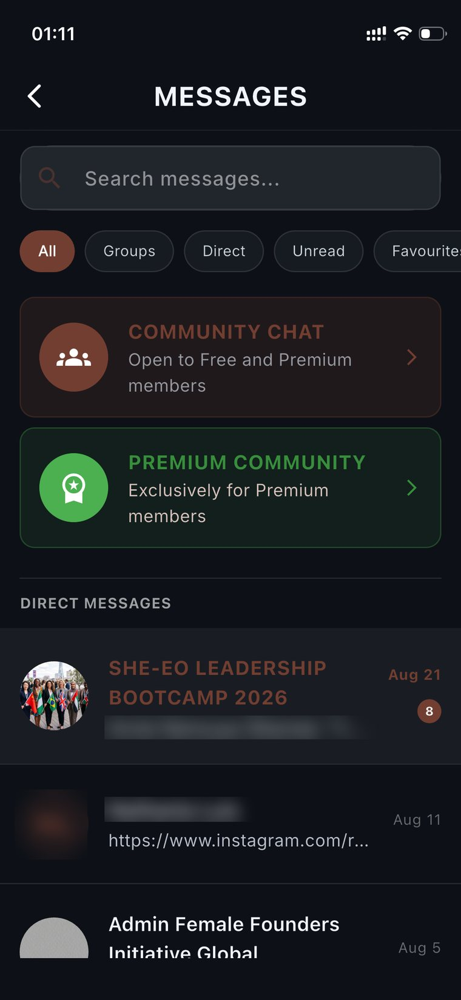
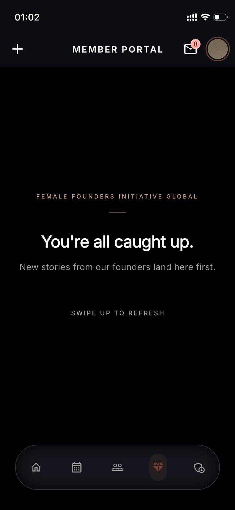
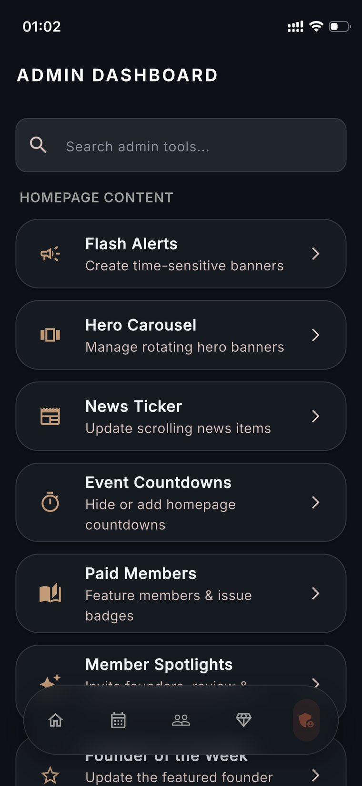
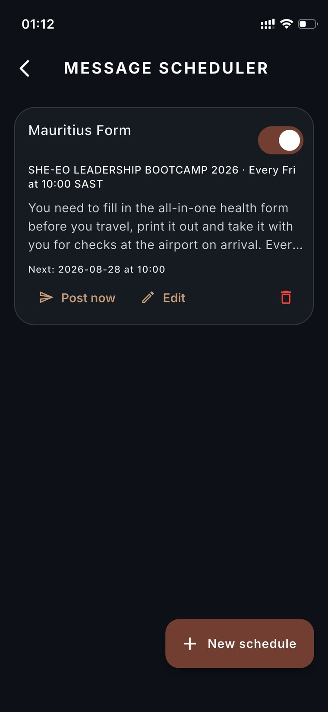
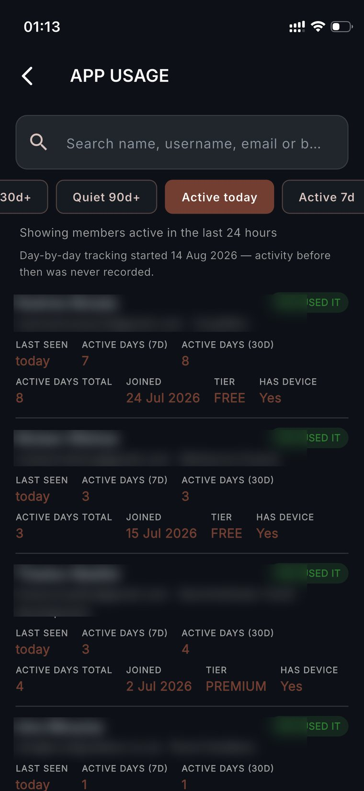
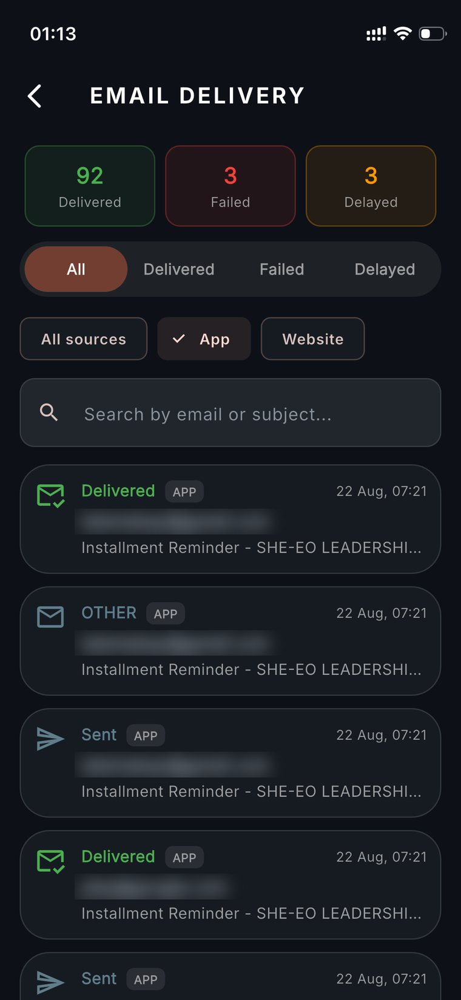
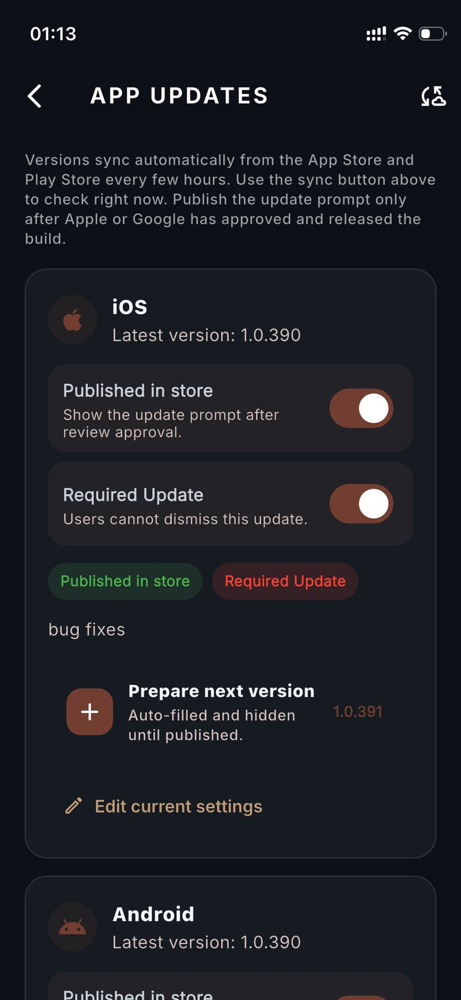

Female Founders Initiative Global
A membership community platform for women founders — a Flutter app for members and admins, backed by a Django service handling auth, events, ticketing, payments, messaging and moderation.
Live product: femalefoundersinitiative.com — the live site evolves independently; this page documents the build as I delivered it.
The brief
FFIG needed more than a website. The organisation runs events, curates resources, and connects a community of founders across regions — and all of that was being coordinated manually across disconnected tools.
The goal was a single product where members could discover and pay for events, find and message each other, and access tiered content, while the FFIG team ran the whole operation from an admin console rather than a spreadsheet.
What I built
Onboarding & identity
Registration, OTP verification, login and password reset, with session handling across both mobile platforms.
Tiered membership
Free, Standard, Premium and Admin tiers. Access rules centralised in a single membership service so entitlements stay consistent everywhere.
Events & ticketing
Event discovery, RSVP and ticket purchase, multi-tier ticket types, speaker and agenda management, plus QR ticket verification at the door.
Directory & messaging
Member directory with public profiles, direct messaging for premium members, and community chat.
Content surfaces
A story and reels-style feed for premium members, and a resource vault holding magazines, masterclasses and newsletters.
Admin console
Homepage module control, approvals for business and marketing content, report moderation, user and login-log management, analytics and ticket purchase logs.
And the operations layer
The part that decides whether a product survives contact with a real team. None of it is user-facing; all of it is what stops the client phoning me every week.
Message scheduler
Recurring announcements posted on a schedule with explicit timezone handling, so a Friday 10:00 SAST reminder means the same thing to every admin.
Email delivery monitoring
Every transactional send tracked as delivered, failed or delayed, filterable by source. When a member says they never got the reminder, there's an answer.
Retention analytics
Per-member activity — last seen, active days over 7/30/total, tier, whether a device is registered — with quiet-30d and quiet-90d cohorts for re-engagement.
Release control
Store versions synced from App Store and Play Store, with an update prompt that can be made mandatory — the escape hatch when a build has to be retired fast.
Architecture
A monorepo splitting the Flutter client from a set of Django domain apps, each owning one slice of the product rather than one giant service.
mobile_app/ Flutter — UI, app-side services, membership rules
│
│ REST (DRF)
▼
Django domain apps
├── authentication/ register · OTP · login · reset
├── members/ profiles · directory · approvals
├── events/ listings · tickets · QR verification
├── payments/ purchase flow · logs
├── chat/ direct messages · community
├── community/ polls · quizzes
├── resources/ vault · media attachments
└── home/ hero · spotlight · alerts · ticker
│
▼
Ops push notifications · universal links · analytics API
Membership entitlements live in one service rather than being checked ad hoc at each screen. Adding a tier or moving a feature between tiers is a change in one file, not a hunt through the UI layer — which matters on a product where the commercial model is still being tuned.
The harder parts
Ticketing that works offline at the door
Tickets carry a QR payload that admins scan to verify entry. Venue wifi is unreliable, so verification had to degrade gracefully rather than block someone at the entrance.
Payments and push, together
Purchase flows and push notifications are the two subsystems where a silent failure costs real money or real trust. Both got an operations runbook covering credential rotation, failure modes and how to recover a stuck transaction — documentation the client's team could act on without me.
Universal links across two stores
Shared links needed to open the app when installed and fall back to the web otherwise, on both iOS and Android — which means association files, signed domains, and store-specific handling.
Stack
Screens
The member-facing app, then the admin and operations tooling behind it.










Member names, photographs and email addresses are blurred throughout. These are captures of a live production system with real members, so every personal detail is redacted — only the structure and the non-identifying metrics remain.